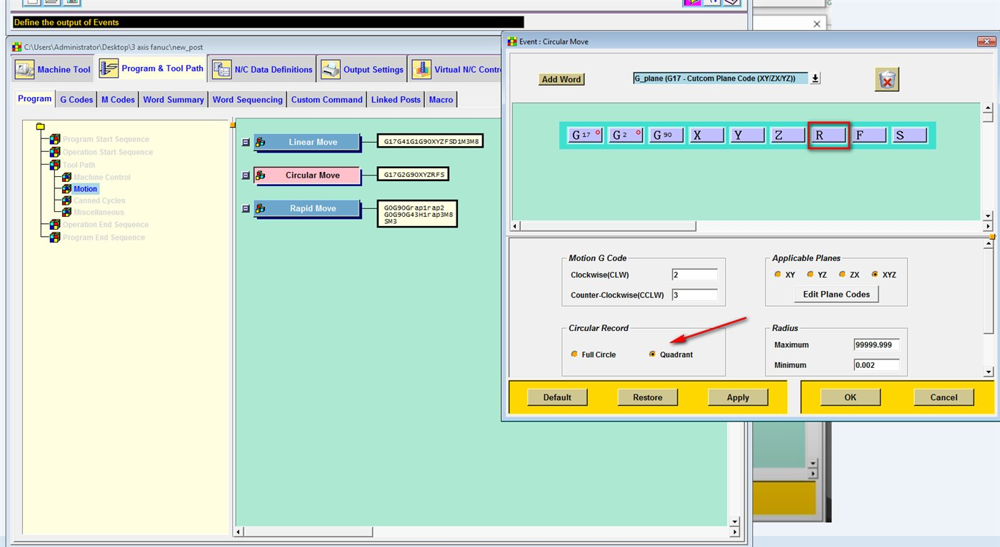
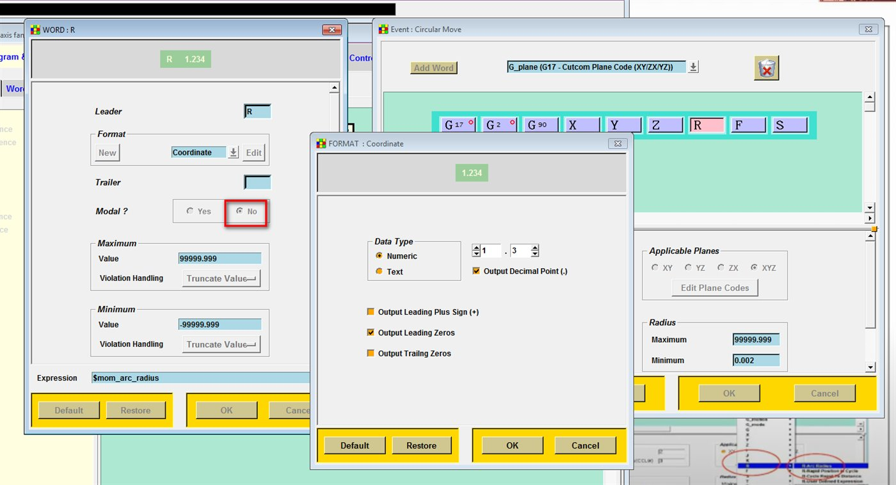

Kết quả
G3Z-1.I-7.J0F2500.
Z-2.I-7.J0
Z-3.I-7.J0G03 X0.0 Y7. Z-.5 R7. F2500.
X-7. Y0.0 Z-1. R7.
X0.0 Y-7. Z-1.5 R7.
X7. Y0.0 Z-2. R7.Cùng một đường xoắn ốc: kiểu R dài gấp 4 lần vì mỗi vòng bị chia thành 4 cung 90°. (File R xuất từ một post khác nên có dấu cách giữa các từ.)
Tải về: NC mẫu xuất bằng R.
01
Circular Move: thay I J K bằng R, chọn Quadrant
Program & Tool Path → Program → Tool Path → Motion → Circular Move. Xoá các từ I J K, thêm từ R (khung đỏ). Ở Circular Record chọn Quadrant (mũi tên).


X Y Z R F, Circular Record = Quadrant.02
Từ R: Modal = No
Mở từ R, chọn Modal = No (khung đỏ) để R in ở mọi dòng cung, kể cả khi bán kính không đổi. Expression giữ $mom_arc_radius.


Khi nào nên giữ IJK
Cung gần 180° tính bằng R dễ sai số; cung trọn vòng không tả được bằng R. Nếu máy đọc được IJK, nên giữ IJK. Ảnh trong bài chụp trên Post Builder bản cũ hơn, các ô cài đặt giống NX 12.
Đừng sửa ADDRESS R trong .def
Bài khoan bỏ R đổi FORCE của ADDRESS R. Post xuất cung bằng R thì không áp dụng bài đó.